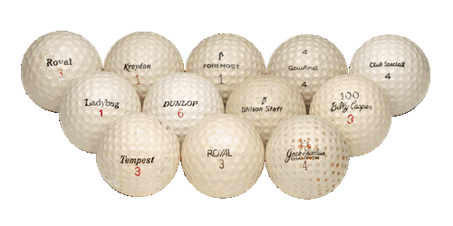
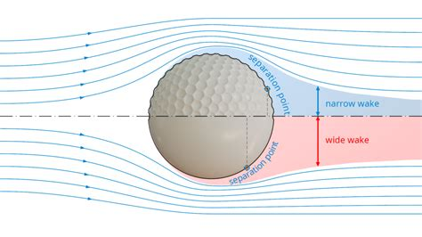
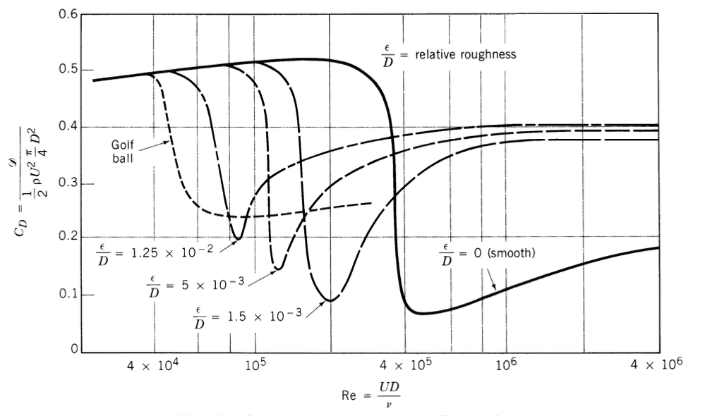
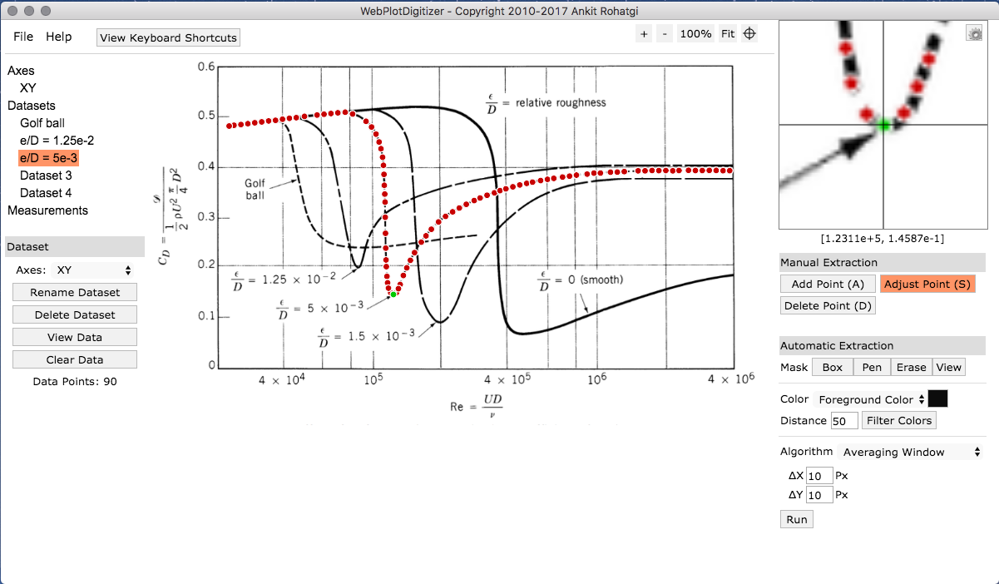
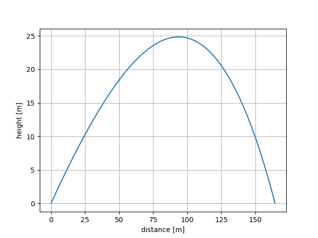
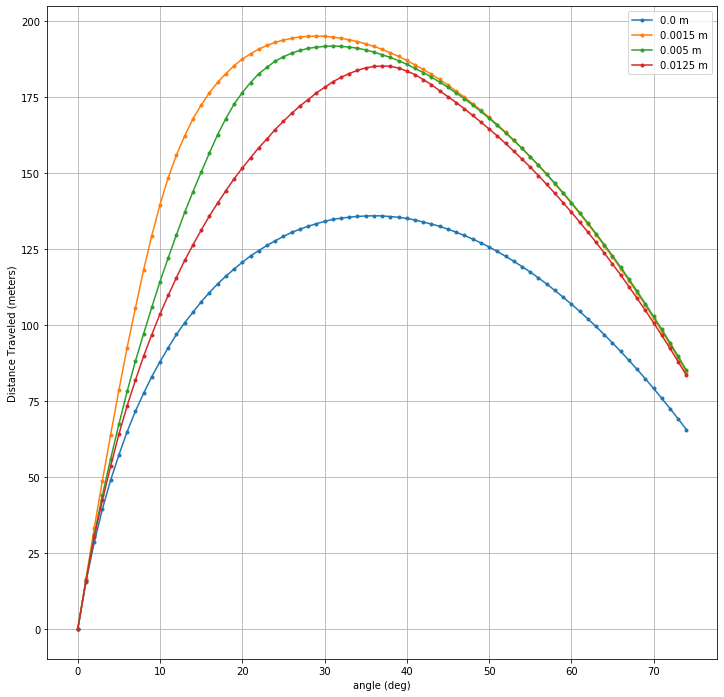
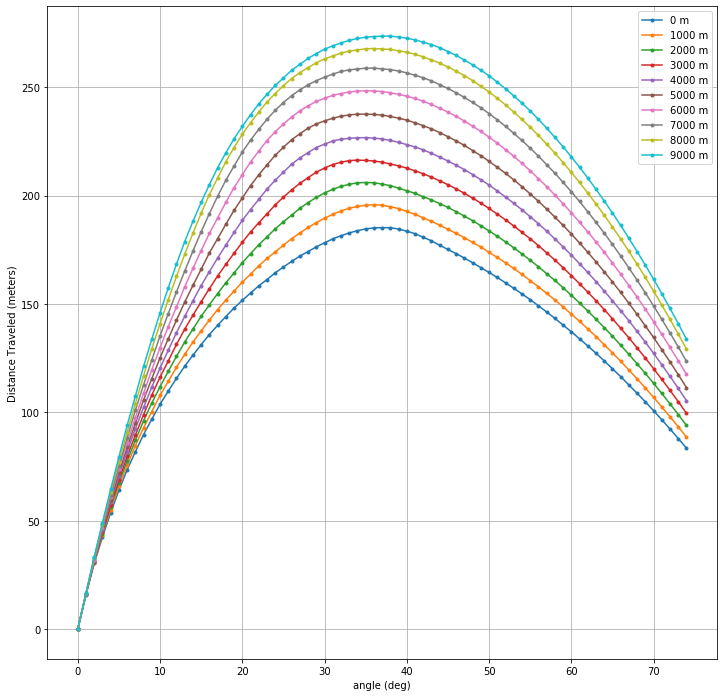

Welcome to golfball¶
golfball is a Projectile Simulation including the “Drag Crisis” with selectable surface feature size. The simulation has its own 1976 Standard Atmosphere model to explore variation in performance with altitude relative to mean sea level.
What is a “Drag Crisis?”¶
The Drag Crisis is a nonlinearity phenomenon that happens when flow detaches and and becomes turbulent around a sphere at a specific Reynolds number (Re). This is why golf balls have dimples – to reduce the turbulent wake width by moving the separation point further aft on the sphere therefore reducing drag, increasing the ballistic coefficient, and ultimately resulting in increased distance of flight.
The following plot shows how this wake narrowing drag reduction effect varies with dimple size and Reynolds number:
The Drag on the ball varies in flight, predominantly as a function of its speed. A golf ball in flight starts on the left of the drag crisis, transitions through the drag reduction, and if velocity drops low enough, it could transition back to the low-speed/high-drag regime. This drag variation makes this model interesting for mapping uncertainty in initial conditions through to trajectory performance.
We digitized these curves from this plot using the open source tool WebPlotDigitizer.
Model parameterization¶
This nonlinear drag model is used with the SciPy ODE Solver from the scipy.integrate package to compute 2D trajectories, parameterizing the initial conditions by
initial height (also used as end height)
initial lateral position
initial launch (flight path) angle
initial velocity
the ball is parameterized with the following inputs:
dimple size
ball mass
ball cross-sectional Area
the environment is parameterized with the following inputs:
gravity
initial height (same as above, used as ref altitude for atmosphere model)
wind vector (constant everywhere as of v1.0)
Note that this model does not capture the Magnus effect – lift from a spinning cylindrical/spherical object. This is a proposed future enhancement to add to the model.
Trajectory characteristics¶
The trajectories take on the traditional drag-body ballistic shape:
Nonlinear sensitivities¶
The model has varying performance with dimple size, as seen by the results of the following sensitivity analysis of hit distance vs. initial launch angle for each of the dimple sizes digitized in the model:
For added dimensionality, we also added a varying density/temperature profile with altitude, in the form of the 1976 U.S. Standard Atmosphere, which is illustrated in the following figure showing the sensitivity analysis of hit distance vs. initial launch angle with varying base altitudes:
Have fun exploring and enhancing this parameterized nonlinear dynamics model!